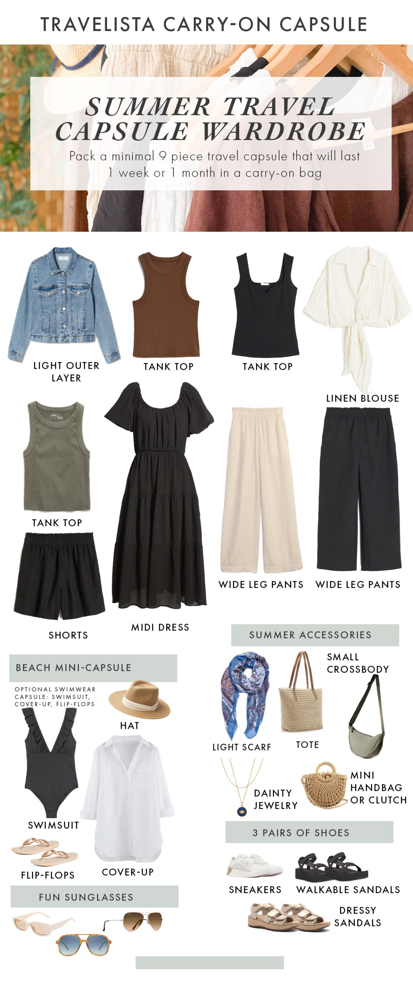
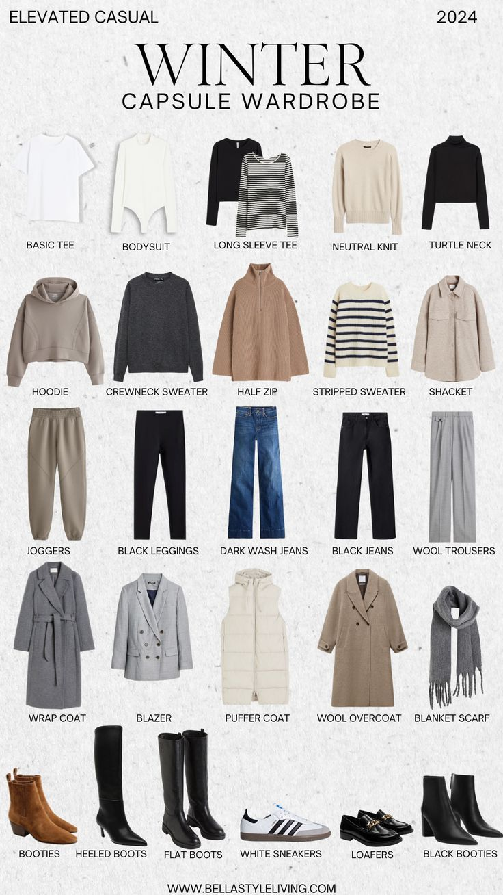
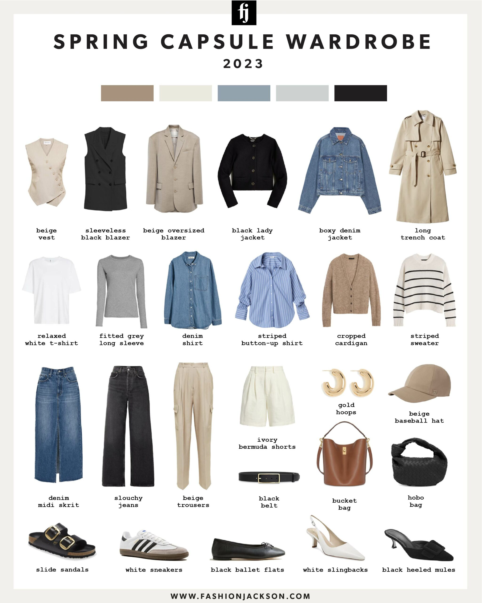
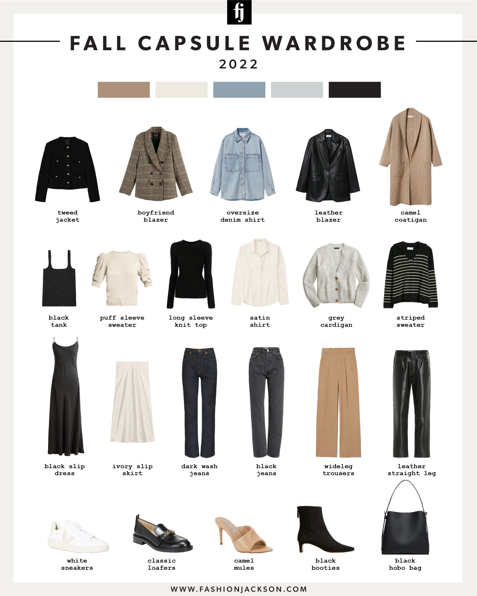

Tired of staring into a overflowing closet with "nothing to wear"? Us too! That's why we're here to introduce you to the magic of capsule wardrobes – a curated collection of interchangeable pieces that maximize style and minimize stress. But with four distinct seasons, building a capsule for each can feel daunting. Fear not, fashion friends! This guide will break down the essentials for a stylish year, no matter the weather.

Summer Wardrobe Guide |

Winter Wardrobe Guide |

Spring Wardrobe Guide |

Autumn Wardrobe Guide |
Over the past 30 years many of Australia’s biggest fashion brands have shut their doors under pressure from the global luxury market, fast fashion competitors and rising manufacturing costs. Lifestyle editor Alyx Gorman and fashion journalist and author Lucianne Tonti explain to Jane Lee why Australia’s golden era of fashion ended and what the future holds for up-and-coming designers. Listen here: